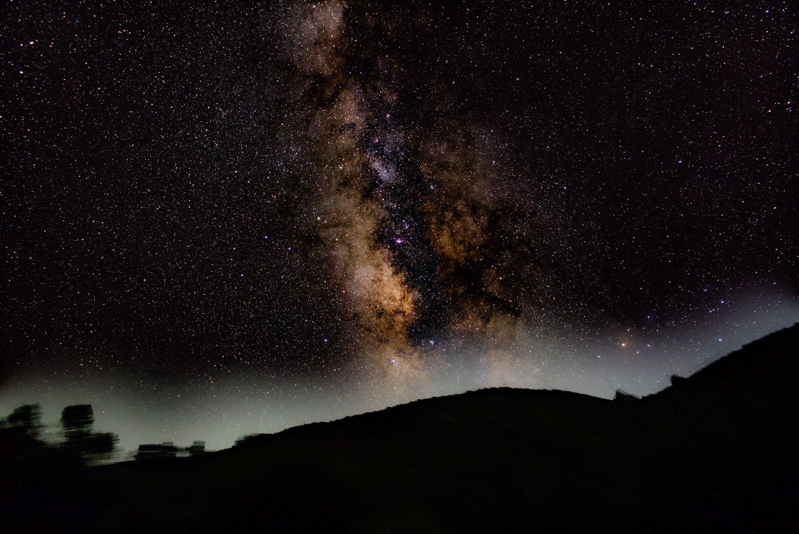

In August 2025 I had the super cool opportunity to go stargazing in Pinnacles National Park with a few of my friends. One of them had a telescope that we were able to use to hook up to a camera and take really long exposure shots of the sky.

While in Edinburgh, I got to take an elective class on the introduction to astrophysics. It was a really fun class where we went over star lifecycles, galaxy morphology, and some cosmology stuff too! So I thought it would be cool to apply what I learned there to explain what you can actually see in this photo.
The glowing band which is the bright central streak is the center of our galaxy. Our spiral galaxy is disc shaped and we are in one of its arms, so from a perspective on earth, looking into the center of the disc looks like one large band. The yellow light is essentially a bunch of densely packed old stars.
You will also notice some dark patches cutting through the bright band. This is interstellar dust absorbing and scattering visible starlight from stars behind it. Basically when a light photon is traveling, if dust is present and thick enough, the photon can collide with a dust particle and either get scattered or absorbed, so it never actually reaches our optical vision here on earth. This is known as dust extinction.
There are some pink/purple smudges present as well. These are ionised hydrogen clouds known as HII regions. They are where hot young massive stars are present and they pump out a lot of UV radiation which ionises the surrounding gas. The gas glows because the electrons in the gas atoms fluctuate down energy levels, emitting spectral lines. So these pink/purple regions actually signify star formation regions!
Another thing that came to mind was Olbers' paradox. If the universe were infinitely old and infinite in size, then every line of sight would hit a star and the whole sky would blaze white. Therefore the universe has to be either finite in age or finite in size.
We found out the universe is actually finite in age through something called the Cosmic Microwave Background. The universe started as an incredibly hot dense sphere that got so hot and dense that it resulted in the big bang. That initial blinding flash of light from the big bang is still echoing in space today, but stretched out by expansion into faint microwave signals. It is the oldest light in the universe. Radio astronomers detected this within space, and by determining the wave composition of the CMB, calculated that the universe is about 13.8 billion years old.
There is a lot more going on in this photo, most of it I probably could not explain. In my class we got to actually learn how the formulas were derived and applied in order to make these discoveries. It seems so unreal how we were able to discover all of this from a small planet and it all started through a series of simple observations like what we can see, hear, and feel. In our first lab we literally measured the distance of the sun by holding up our finger and arm to the sun, grabbing those measurements, then using the small angle approximation. I am leaving out a LOT just to keep this as short as possible, but being able to capture this much inside of a singular photo was just mindblowing to me, so I had to write about it :)